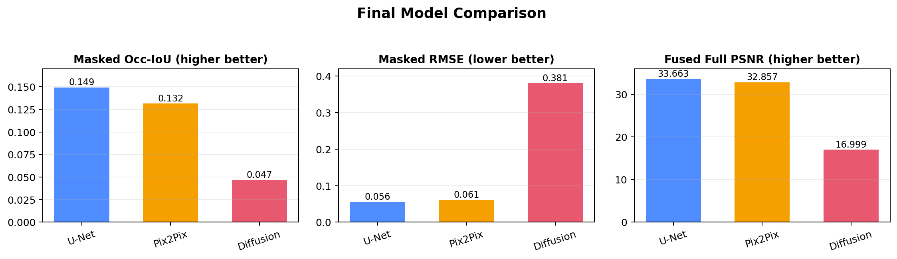
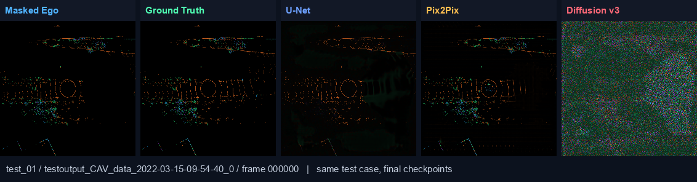

V2V BEV Reconstruction
Cleaned MEng project repo for review. The first-level model folders are the confirmed runs; older experiments are separated under old_versions/.
Open These First
Final reportdocs/final_results_report.html
Proposal and paper notesdocs/research_proposal_and_paper_reading.html
Dataset accessDATASET_ACCESS.md
All figuresresults/FIGURE_MANIFEST.md
Confirmed Final Runs
| Model | Evidence | Masked Occ-IoU | Precision / Recall / F1 | Masked RMSE | Fused Full PSNR |
|---|---|---|---|---|---|
| U-Net final | Seeds 42/43/44, 80 epochs, Optuna shared loss | 0.1494 +/- 0.0023 | 0.2009 / 0.3684 / 0.2600 | 0.05595 +/- 0.00010 | 33.66 +/- 0.02 |
| Pix2Pix final | Seed 42, 40 epochs, lambda_adv=0.1 |
0.1317 | 0.2701 / 0.2044 / 0.2327 | 0.06139 | 32.86 |
| Diffusion v3 final | Seed 42, 120 epochs, Narval A100 | 0.0467 | 0.0467 / 1.0000 / 0.0893 | 0.38101 | 17.00 |
Final Comparison

Qualitative Cases

Each final model folder also has its own results/figures/ folder with standalone prediction samples and curves.
Folder Map
00_data_pipelineRaw V2V4Real to 8-channel BEV preparation.
01_unet_finalOfficial best baseline, exact 3-seed commands, metrics, and figures.
02_pix2pix_finalGAN baseline, adversarial-weight evidence, metrics, and figures.
03_diffusion_finalCorrected diffusion v3 baseline, metrics, figures, and failure diagnosis.
old_versionsEarlier experiments and notes on why they were not promoted.
resultsCross-model summaries plus the full report-image archive.